Supplemente mit Evidenz
Die kurze, ehrliche Liste — was wirklich wirkt, was Geldverschwendung ist und in welcher Reihenfolge du überhaupt darüber nachdenken solltest.
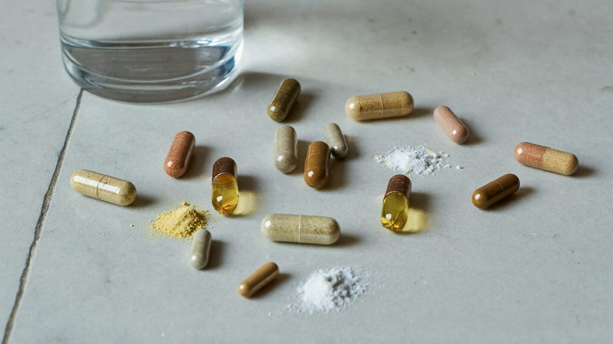
Inhalt
- Die 95-%-Regel: Supplemente sind der kleinste Hebel
- Die Supplement-Pyramide: das Tier-System
- Tier 1 — Pflicht, wenn es passt (Kreatin, Protein, Koffein)
- Tier 2 — bei Bedarf & Mangel (Vitamin D, Magnesium, Zink)
- Tier 3 — Biohacking, wenn die Basis steht
- Bioverfügbarkeit, Formen & Timing
- Der 6-Fragen-Stack-Kompass
- Reiner Marketing-Müll
- So baust du deinen minimalen Stack
- Mythen-Check
- Sicherheit & Arzt
1. Die 95-%-Regel: Supplemente sind der kleinste Hebel
Sei ehrlich zu dir: Der Großteil der Supplement-Industrie verkauft Marketing, keine Wirkung. Geschätzt 95 % der Mittel im Regal machen für einen normalen, gesunden Mann keinen messbaren Unterschied. Die Branche lebt nicht von Molekülen, sondern von Hoffnung — von dem Gefühl, dass die nächste Dose endlich der fehlende Baustein ist.
Der Denkfehler dahinter heißt Reihenfolge. Supplemente sind der letzte und kleinste Hebel — sie kommen nach Training, Ernährung, Schlaf und Alltagsbewegung, nicht davor. Das Wort sagt es selbst: to supplement heißt ergänzen. Man ergänzt eine Basis, die schon steht. Ein Pulver auf einem Fundament aus zu wenig Schlaf, zu wenig Protein und zu wenig Bewegung ist wie ein Spoiler auf einem Auto ohne Motor.
Nüchtern gerechnet: Krafttraining und ausreichend Protein bewegen deine Körperzusammensetzung über Monate um Größenordnungen mehr als jedes legale Supplement. Der beste Wirkstoff für Testosteron ist konsequenter Schlaf, nicht die Kapsel mit dem Wurzelextrakt. Wenn die Basis wackelt, ist jede Ausgabe im Supplement-Regal in erster Linie eine Ablenkung von dem, was wirklich zählt.
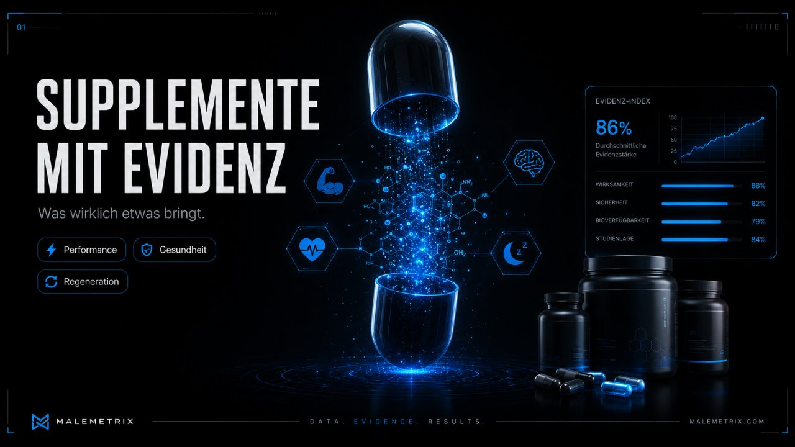
2. Die Supplement-Pyramide: das Tier-System
Statt einer wahllosen Einkaufsliste brauchst du eine Hierarchie. Denk in drei Stufen — einer Pyramide. Ganz unten steht das Fundament (Training, Ernährung, Schlaf), das kein Supplement ist. Darüber liegen drei schmaler werdende Ebenen, die immer optionaler und immer stärker vom Einzelfall abhängig werden. Je höher du steigst, desto kleiner der Effekt und desto mehr Selbsttäuschung ist im Spiel.
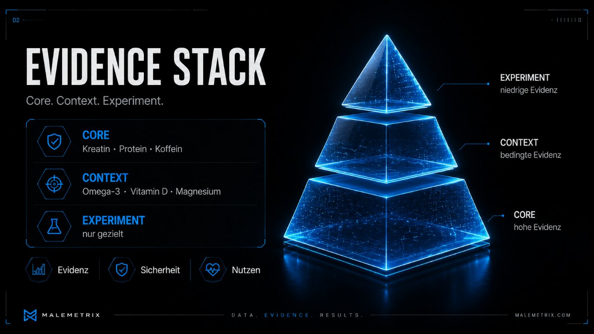
| Tier | Logik | Beispiele | Erwartbarer Effekt |
|---|---|---|---|
| Tier 1 Pflicht, wenn es passt | Breite Evidenz, gutes Sicherheitsprofil, günstig. Lohnt sich für fast jeden trainierenden Mann. | Kreatin-Monohydrat, Protein-Pulver, Koffein | klein bis spürbar, gut belegt |
| Tier 2 bei Bedarf & Mangel | Nur sinnvoll, wenn ein Mangel oder ein konkreter Bedarf vorliegt — idealerweise über Blutwert oder Ernährung belegt. | Vitamin D, Magnesium, Zink | groß bei Mangel, null bei Überfluss |
| Tier 3 Biohacking | Situatives Feintuning für ein spezifisches Problem. Kleiner Effekt, individuell sehr unterschiedlich, teils dünnere Evidenz. | L-Theanin, Glycin, Omega-3, Psyllium, Nitrate, Apigenin, Adaptogene | klein und individuell |
Der Trick ist nicht, alle drei Ebenen abzuarbeiten. Der Trick ist zu wissen, auf welcher Ebene ein Problem überhaupt liegt — und die unteren zuerst zu klären. Wer bei Tier 3 anfängt, während Tier 1 und die Basis offen sind, gibt Geld für die dünnste Stelle der Pyramide aus.
3. Tier 1 — Pflicht, wenn es passt Level 1 · Pflicht
Diese drei haben eine breite Studienbasis, ein sauberes Sicherheitsprofil und kosten wenig. Für den durchschnittlichen trainierenden Mann sind sie das, was sich am ehesten lohnt.
Kreatin-Monohydrat — Kraft, Muskel und Gehirn
Kreatin ist das bestuntersuchte Supplement der Sporternährung, mit Hunderten kontrollierter Studien und einem Sicherheitsprofil, das über Jahre gut dokumentiert ist. Der Mechanismus ist gut verstanden und lohnt sich zu verstehen, weil er zeigt, warum der Effekt real und nicht nur Marketing ist.
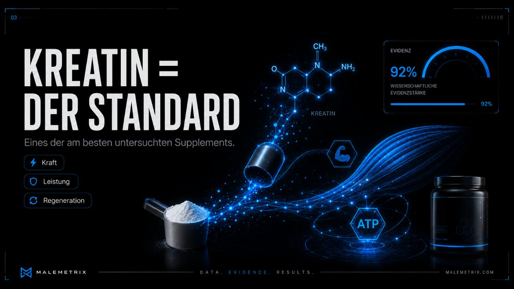
Das Phosphokreatin-System: Deine Muskelzellen bezahlen kurze, intensive Anstrengung mit ATP, der Energiewährung der Zelle. ATP-Vorräte reichen aber nur für wenige Sekunden. Kreatin wird im Muskel als Phosphokreatin gespeichert und gibt seine Phosphatgruppe blitzschnell an verbrauchtes ADP ab — so wird ATP unmittelbar regeneriert. Mehr Phosphokreatin im Speicher heißt: die letzte, entscheidende Wiederholung gelingt, das nächste schwere Set ist minimal stärker. Über Wochen summiert sich das zu mehr Trainingsvolumen — und Volumen ist ein Haupttreiber von Muskelaufbau.
Der kognitive Effekt: Nicht nur Muskeln verbrauchen ATP, auch das Gehirn ist ein enormer Energiefresser. Die Studienlage deutet darauf hin, dass eine bessere Kreatinversorgung des Gehirns die kognitive Leistung besonders unter Belastung stützt — bei Schlafmangel, mentaler Ermüdung oder hoher Beanspruchung. Der Effekt ist kein Wachmacher wie Koffein, sondern ein Puffer gegen Leistungseinbrüche, wenn das System unter Druck steht. Genau deshalb ist Kreatin längst aus der reinen Bodybuilder-Ecke heraus.
Als Form ist Monohydrat der Goldstandard: am besten erforscht, am günstigsten, und teurere „Kreatin-HCl"- oder „gepufferte" Varianten bieten keinen belegten Zusatznutzen. Als Richtwert gilt in der Literatur eine tägliche Erhaltungsmenge im niedrigen einstelligen Gramm-Bereich; eine „Ladephase" ist nicht nötig, sie füllt die Speicher nur schneller. Der Tageszeitpunkt ist zweitrangig — entscheidend ist die tägliche Konstanz, weil sich der Effekt erst über Wochen der Sättigung aufbaut.
Protein-Pulver — kein Wundermittel, sondern ein Werkzeug
Protein-Pulver ist streng genommen Lebensmittel in praktischer Form, kein „Supplement" im engeren Sinn. Sein einziger Job: dir helfen, dein tägliches Eiweißziel zu treffen, wenn echtes Essen das gerade nicht schafft. Die Proteinschwelle für Muskelaufbau liegt laut Studienlage grob bei 1,6–2,2 g pro Kilogramm Körpergewicht pro Tag, im Kaloriendefizit eher am oberen Ende und bezogen auf die fettfreie Masse.
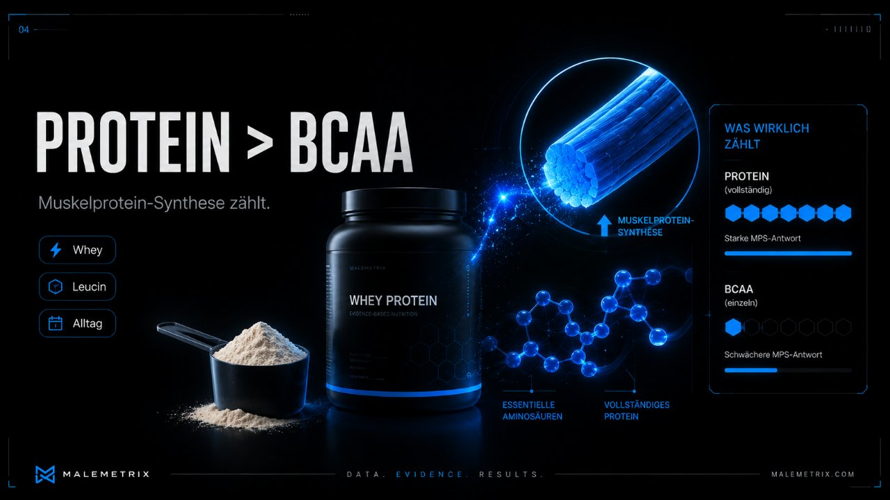
Wer dieses Ziel mit normalem Essen erreicht, braucht kein Pulver. Wer es nicht erreicht, für den ist ein Shake die billigste und einfachste Lücke-Schließung — nicht magischer als ein Hähnchenbrustfilet, aber praktischer nach dem Training oder im hektischen Alltag. Whey ist gut untersucht und schnell verfügbar; pflanzliche Mischungen funktionieren ebenso, wenn das Aminosäureprofil stimmt. Das teure „Anabol-Matrix"-Marketing auf der Dose ändert am Inhalt nichts.
Koffein — der ehrlichste Leistungsverstärker
Adenosin und der Wecker-Mechanismus: Über den wachen Tag lagert sich im Gehirn Adenosin an — ein Nebenprodukt des Energiestoffwechsels. Je mehr Adenosin an seine Rezeptoren andockt, desto stärker das Gefühl von Müdigkeit. Adenosin ist quasi der wachsende Schlafdruck. Koffein ist strukturell ähnlich genug, um sich auf dieselben Rezeptoren zu setzen und sie zu blockieren, ohne sie zu aktivieren. Es macht dich nicht wach, es versteckt nur die Müdigkeit — der Adenosin-Berg wächst im Hintergrund weiter.
Für Training und Fokus ist Koffein einer der am besten belegten legalen Leistungsverstärker überhaupt: mehr wahrgenommene Kraft, bessere Ausdauer, wacherer Kopf. Der Haken ist das Timing. Koffein hat eine Halbwertszeit von rund 5–6 Stunden — nach dieser Zeit ist erst die Hälfte abgebaut. Ein Espresso um 17 Uhr sitzt um Mitternacht noch messbar im System und knabbert an der Tiefschlafqualität, oft ohne dass man den Zusammenhang spürt. Daraus folgt ein einfacher Richtwert: einen Cutoff von etwa 8–10 Stunden vor dem Zubettgehen setzen.
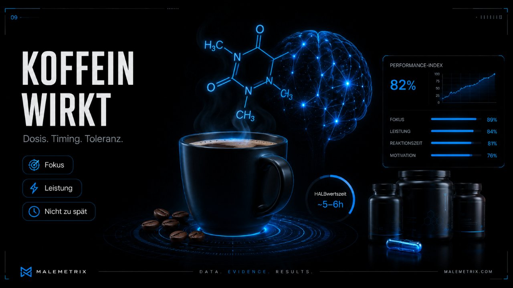
4. Tier 2 — bei Bedarf & Mangel Level 2 · sinnvoll
Diese Mittel sind keine Leistungsverstärker, sondern Lückenfüller. Ihr Effekt ist groß, wenn ein echter Mangel besteht — und exakt null, wenn du ohnehin versorgt bist. Deshalb gilt hier die Regel: erst der Bedarf, dann die Dose. Idealerweise über Blutwert oder eine ehrliche Analyse der Ernährung.
Vitamin D — nur nach Blutwert
Vitamin D wirkt im Körper eher wie ein Hormon als wie ein Vitamin und ist an unzähligen Prozessen beteiligt. In sonnenarmen Breiten ist ein niedriger Status im Winter verbreitet. Aber: „verbreitet" heißt nicht „bei dir". Der einzige sinnvolle Startpunkt ist der gemessene Wert im Blut (25-OH-Vitamin-D). Ohne diesen Wert supplementierst du blind — und Vitamin D ist fettlöslich, das heißt, es reichert sich an und lässt sich überdosieren. Höher ist hier nicht besser. Konkrete Mengen sind eine Frage des Ausgangswerts und gehören in ärztliche Hand.
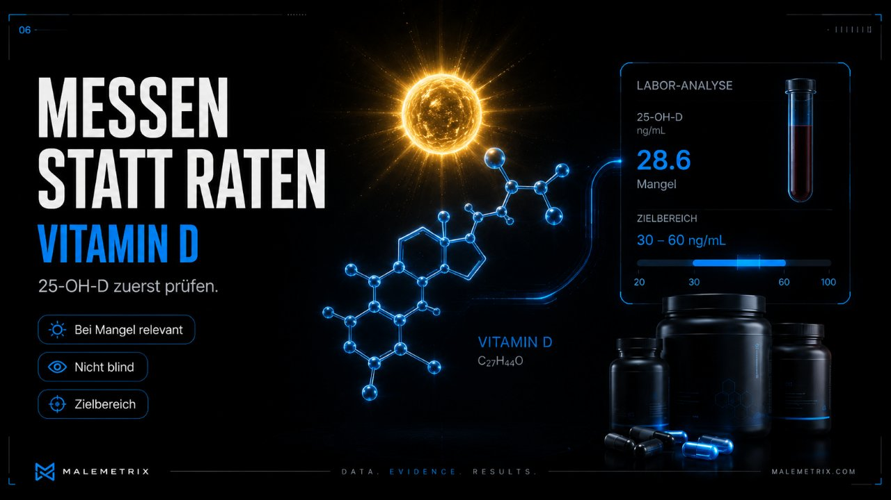
Magnesium — der stille Sub-Mangel
Magnesium ist Cofaktor in Hunderten enzymatischer Reaktionen, unter anderem im Energiestoffwechsel und in der Muskel- und Nervenfunktion. Eine leichte Unterversorgung ist bei einseitiger Ernährung nicht selten und äußert sich unspezifisch — Verspannung, unruhiger Schlaf, Muskelzucken. Entscheidend ist die Form: Magnesium-Bisglycinat ist an die Aminosäure Glycin gebunden, gut verträglich und macht deutlich seltener Durchfall als billiges Magnesiumoxid, dessen Bioverfügbarkeit niedrig ist. Als Richtwert nennt die Literatur einen elementaren Magnesiumgehalt im mittleren dreistelligen Milligramm-Bereich; die abendliche Einnahme wird wegen des entspannenden Charakters oft bevorzugt.
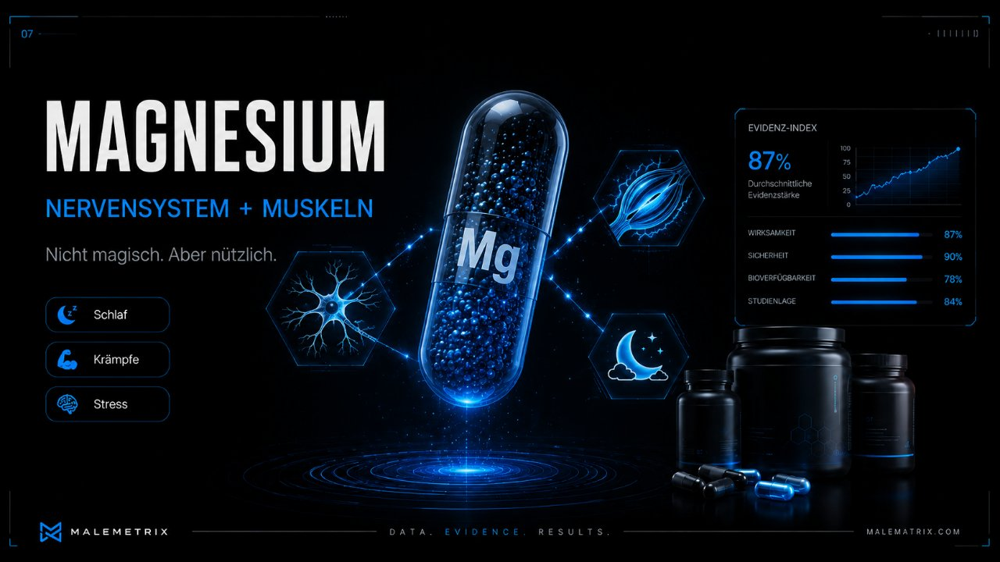
Zink — wichtig, aber kein Dauerläufer
Zink ist an Immunfunktion, Wundheilung und der Hormonsynthese beteiligt. Ein echter Mangel drückt messbar auf diese Systeme — aber die Betonung liegt auf echt. Dauerhaft hohe Zinkzufuhr ohne Mangel ist nicht harmlos: Zink und Kupfer konkurrieren um dieselben Aufnahmewege, chronisch hohes Zink kann einen Kupfermangel provozieren. Deshalb ist Zink ein klassisches „nur bei nachgewiesenem Bedarf und nicht dauerhaft hoch"-Supplement, kein tägliches Basismittel für jeden.
5. Tier 3 — Biohacking, wenn die Basis steht Level 3 · Biohacking
Hier beginnt das Feintuning: kleine, situative Hebel für ein konkretes Problem. Der erwartbare Effekt ist klein und stark individuell, die Evidenz teils dünner. Diese Ebene lohnt sich erst, wenn Basis, Tier 1 und Tier 2 wirklich sitzen — sonst optimierst du Nachkommastellen, während vorne die ganze Zahl fehlt.
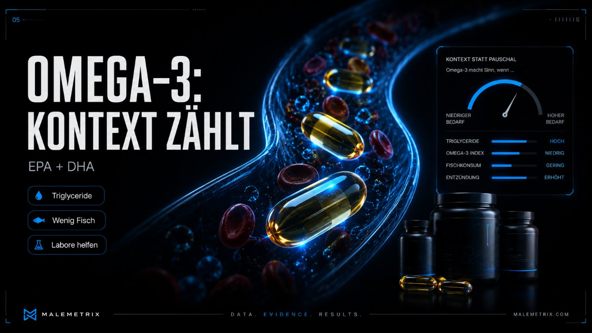
| Substanz | Wofür — der Ansatz | Einordnung |
|---|---|---|
| L-Theanin | Aminosäure aus grünem Tee; fördert ruhigen Fokus und dämpft die Nervosität von Koffein, ohne müde zu machen. Beliebt als Koffein-Partner. | gut verträglich, kleiner, spürbarer Effekt |
| Glycin | Aminosäure mit leicht beruhigendem Profil; wird für die Schlafqualität und ein schnelleres Einschlafen diskutiert, teils über eine milde Absenkung der Körperkerntemperatur. | günstig, dünnere, aber wachsende Evidenz |
| Omega-3 (EPA/DHA) | langkettige Fettsäuren für Herz-Kreislauf, Entzündungsregulation und Gehirn. Sinnvoll vor allem bei wenig Fisch in der Ernährung. | solide Evidenz, Effekt abhängig vom Ausgangsstatus |
| Psyllium / Ballaststoffe | Flohsamenschalen als lösliche Faser für Darm, Sättigung und Blutzuckerkurve. Deckt eine reale Lücke, weil die meisten zu wenig Ballaststoffe essen. | günstig, unterschätzt, gut begründet |
| Rote Beete / Nitrate | diätetische Nitrate erhöhen die Stickstoffmonoxid-Verfügbarkeit, was die Durchblutung und die Ausdauerleistung leicht verbessern kann. | gut untersucht für Ausdauer, Effekt moderat |
| Apigenin | Pflanzenstoff (u. a. aus Kamille), der im Biohacking-Kontext für den Abendmodus und die Schlafeinleitung diskutiert wird. | populär, Evidenz beim Menschen begrenzt |
| Ashwagandha / Rhodiola | Adaptogene, die mit der Stressachse in Verbindung gebracht werden — Ashwagandha eher beruhigend, Rhodiola eher gegen Erschöpfung. | vorsichtig einordnen, Qualität schwankt stark |
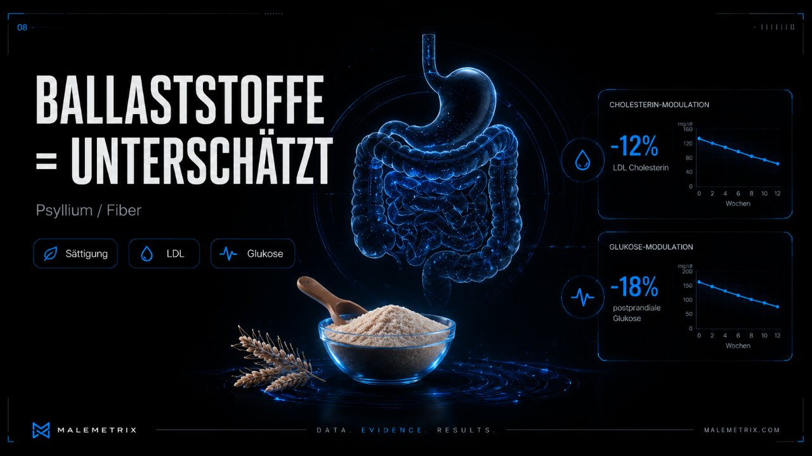
6. Bioverfügbarkeit, Formen & Timing
Ein Wirkstoff auf dem Etikett ist nicht dasselbe wie ein Wirkstoff im Blut. Zwei Dinge entscheiden, ob ein Supplement überhaupt ankommt: die Form (welches Salz, welche Bindung) und das Timing (wann und womit du es nimmst). Genau hier trennt sich seriöses Produkt von hübsch bedruckter Dose.
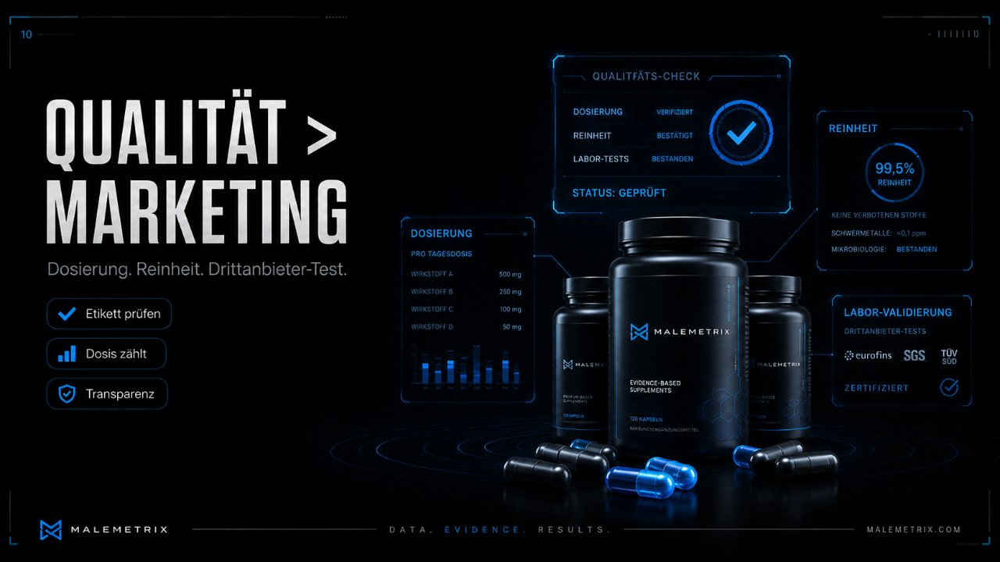
Form schlägt Menge. „500 mg Magnesium" auf der Vorderseite sagt nichts, wenn es billiges Oxid mit niedriger Aufnahme ist — entscheidend ist der elementare, tatsächlich verwertbare Anteil. Bisglycinat wird besser vertragen und aufgenommen. Dasselbe Prinzip gilt breit: bei Kreatin ist schlichtes Monohydrat den teuren Varianten ebenbürtig oder überlegen; bei Zink sind organische Formen (z. B. -Citrat, -Bisglycinat) dem Oxid überlegen; bei Omega-3 zählt der reale EPA/DHA-Gehalt, nicht die Gesamtmilligramm „Fischöl".
| Faktor | Worauf es ankommt |
|---|---|
| Fettlöslich vs. wasserlöslich | Vitamin D und Omega-3 werden mit etwas Fett (also zu einer Mahlzeit) besser aufgenommen; das nüchterne Kapsel-am-Morgen ist suboptimal. |
| Konkurrenz um Aufnahmewege | Hohe Zinkmengen können Kupfer verdrängen; große Mineralstoffmengen konkurrieren teils untereinander — nicht wahllos alles gleichzeitig stapeln. |
| Sättigung vs. Akutwirkung | Kreatin wirkt über die Speichersättigung — Tageszeit egal, Konstanz zählt. Koffein wirkt akut — hier ist der Zeitpunkt alles. |
| Reinheit & Labor | Bei Pulvern und Ölen entscheidet unabhängige Laborprüfung über Schadstoffe, Oxidation und tatsächlichen Wirkstoffgehalt. |
7. Der 6-Fragen-Stack-Kompass
Bevor du irgendetwas kaufst, jag es durch diese sechs Fragen. Wenn du auch nur eine nicht sauber beantworten kannst, ist das dein Signal, die Finger davon zu lassen. Der Kompass ist der Filter, der aus einer Wunschliste einen minimalen Stack macht.
| # | Frage | Warum sie zählt |
|---|---|---|
| 1 | Welches konkrete Problem soll das lösen? | „Allgemein gesünder" ist kein Problem. Ohne benanntes Ziel kannst du Wirkung nie beurteilen. |
| 2 | Woran erkenne ich in 14 Tagen, ob es wirkt? | Definiere vorher ein Kriterium (Schlafgefühl, Trainingsleistung, ein Messwert). Ein Test ohne Erfolgsmaß läuft ewig ohne Ergebnis. |
| 3 | Was lasse ich gleich, während ich teste? | Änderst du fünf Dinge gleichzeitig, weißt du nie, was gewirkt hat. Ein Regler pro Zeit. |
| 4 | Was kostet es — pro Monat und pro Wirkung? | Rechne auf den Monat hoch. Billig pro Dose kann teuer pro Effekt sein, wenn nichts passiert. |
| 5 | Welches Risiko / welche Wechselwirkung gibt es? | Medikamente, Vorerkrankungen, fettlösliche Überdosierung, Adaptogene. „Natürlich" heißt nicht „folgenlos". |
| 6 | Was ist meine Exit-Regel? | Lege vorher fest, wann du absetzt: Wenn das 14-Tage-Kriterium nicht erfüllt ist, fliegt es raus. Kein „vielleicht wirkt es ja doch schleichend". |
8. Reiner Marketing-Müll
Diese Kategorien liefern im besten Fall einen vernachlässigbaren Effekt — im schlechtesten teuren Urin. Sie leben davon, ein echtes Ziel (mehr Testosteron, weniger Fett, mehr Muskel) an ein Molekül zu koppeln, das dieses Ziel nachweislich nicht liefert.
- „Test-Booster": Die meisten zeigen keinerlei relevante Wirkung auf den Testosteronspiegel eines gesunden Mannes. Schlaf, Körperfett runter, weniger Alkohol und Krafttraining schlagen jede Kapsel um Längen. Die einzelnen Zutaten (Tribulus, diverse Kräuter) sind mehrfach untersucht und enttäuschen konsistent.
- „Fatburner": Kein frei verkäufliches Mittel verbrennt nennenswert Fett. Das erledigt die Energiebilanz, nicht die Pille. Der einzige „aktive" Bestandteil ist meist Koffein — das bekommst du billiger als Kaffee.
- BCAAs: Überflüssig, wenn du dein Proteinziel triffst (was du solltest). Ein vollständiges Protein enthält die verzweigtkettigen Aminosäuren bereits im richtigen Kontext. BCAAs isoliert sind für den normal essenden Mann rausgeworfenes Geld.
- „Detox" & Entschlackung: Dein Körper hat Leber und Nieren — ein hochwirksames Entgiftungssystem, das keine Tee-Kur braucht. „Detox" ist ein Marketingwort ohne physiologische Grundlage.
- Exotische Wunderpülverchen: je länger die Zutatenliste und je vollmundiger die Wirkversprechen, desto größer die Wahrscheinlichkeit, dass die Dosis jeder Zutat zu niedrig für einen Effekt ist („Fairy Dusting").
9. So baust du deinen minimalen Stack
Ein guter Stack ist kein Schrank voller Dosen, sondern eine kurze, begründete Liste. Der Aufbau folgt der Pyramide von unten nach oben — und stoppt, sobald der nächste Schritt keinen benannten Nutzen mehr hat.
- Basis zuerst. Protein am Ziel, Krafttraining konstant, 7–8 Stunden Schlaf, Alltagsbewegung, Alkohol runter. Ohne diese Punkte ist jeder weitere Schritt Kosmetik.
- Tier 1 prüfen. Kreatin-Monohydrat für fast jeden trainierenden Mann. Protein-Pulver nur, wenn du dein Eiweißziel mit Essen nicht schaffst. Koffein bewusst und mit Cutoff.
- Tier 2 nur nach Bedarf. Vitamin D und Zink erst nach Blutwert. Magnesium-Bisglycinat, wenn Zufuhr und Symptomatik dafür sprechen.
- Tier 3 gezielt und einzeln. Höchstens für ein klar benanntes Problem — und immer nur ein neues Mittel auf einmal, sonst versagt der 14-Tage-Test.
- Regelmäßig ausmisten. Alle paar Monate jede Dose durch den 6-Fragen-Kompass jagen. Was kein benanntes Problem mehr löst, fliegt raus.
10. Mythen-Check
| Mythos | Realität |
|---|---|
| „Kreatin schädigt die Nieren." | Bei nierengesunden Menschen ist Kreatin über lange Zeiträume gut dokumentiert und gilt als sicher. Der erhöhte Kreatinin-Laborwert ist ein Messartefakt, kein Schaden. Vorerkrankungen der Niere gehören dennoch in ärztliche Hand. |
| „Kreatin muss man laden und cyceln." | Nein. Eine Ladephase füllt die Speicher nur schneller, ist aber nicht nötig. Absetz-Zyklen bringen keinen belegten Vorteil — Konstanz zählt. |
| „Natürlich = harmlos." | Adaptogene, hochdosiertes Zink oder fettlösliche Vitamine können Nebenwirkungen und Wechselwirkungen haben. Die Dosis und der Kontext machen das Gift, nicht die Herkunft. |
| „Mehr hilft mehr." | Bei Mangel-Supplementen ist über dem Bedarf null Zusatznutzen und teils Risiko (Kupfermangel durch Zink, Vitamin-D-Überdosierung). Die Dosis-Wirkungs-Kurve ist keine Gerade. |
| „Ein niedriger Laborwert = Diagnose." | Ein einzelner Wert ist eine Momentaufnahme. Sinnvoll ist wiederholtes Messen und ärztliche Einordnung, nicht die Panik-Bestellung nach einem Selbsttest. |
| „Teuer = wirksam." | Preis korreliert mit Marketing, nicht mit Wirkung. Das bestbelegte Supplement (Kreatin-Monohydrat) ist zugleich eines der billigsten. |
11. Sicherheit & Arzt Red Zone · ärztlich
Mehr ist nicht besser. Bei Vitamin D, Zink und allem, was über die Basis hinausgeht, gilt: erst Bedarf oder Blutwert, dann supplementieren. Fettlösliche Vitamine reichern sich an, Mineralstoffe konkurrieren untereinander, und Adaptogene greifen in Regelsysteme ein.
Wenn du Medikamente nimmst oder Vorerkrankungen hast, sprich vor neuen Supplementen mit deinem Arzt — auch frei verkäufliche Mittel können relevante Wechselwirkungen haben. Verschreibungspflichtige Hormone oder Substanzen bleiben grundsätzlich eine ärztliche Angelegenheit und haben in einem Selbstoptimierungs-Stack nichts verloren.
Nächster Schritt: Statt nach Pillen zu suchen, finde mit dem kostenlosen MaleMetrix Score heraus, welcher echte Hebel dich gerade am meisten bremst.
Im 1:1-Coaching bekommst du Training, Ernährung, Schlaf und Blutwerte-Struktur persönlich auf dich zugeschnitten — wöchentlich angepasst, mit direktem Draht. Das Erstgespräch ist kostenlos und unverbindlich.
Kostenloses Analysegespräch buchen →© MaleMetrix. Allgemeine Information, kein Ersatz für ärztliche Beratung und keine Einnahmeempfehlung.